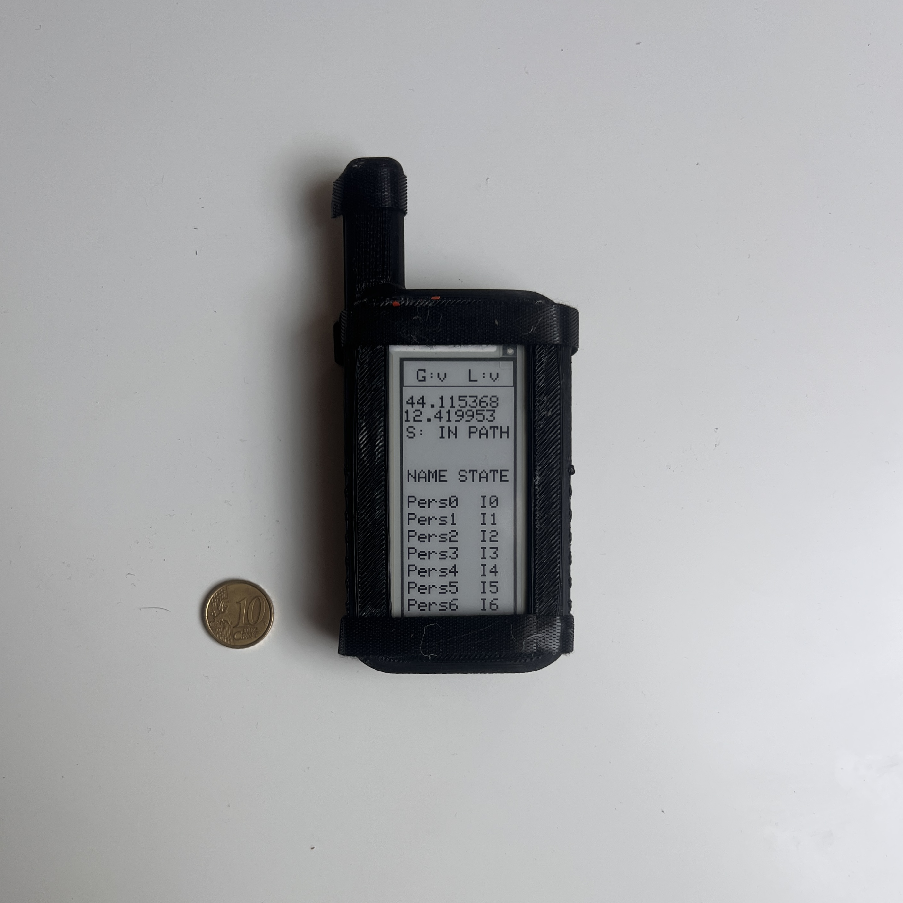
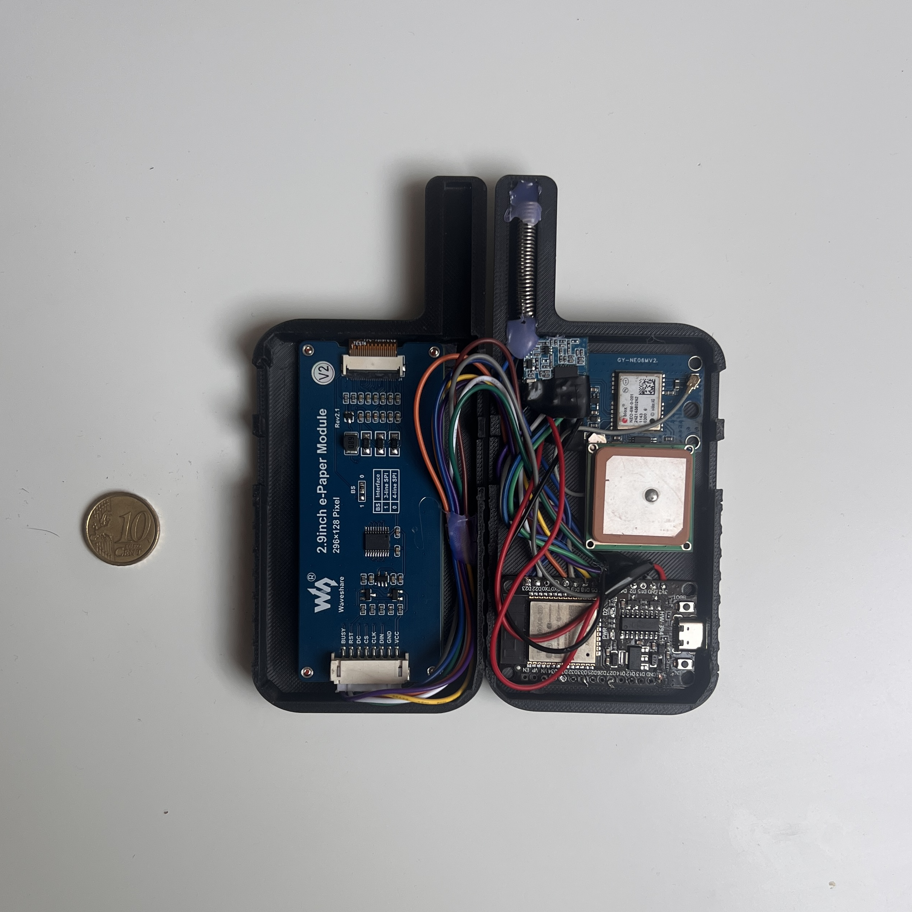
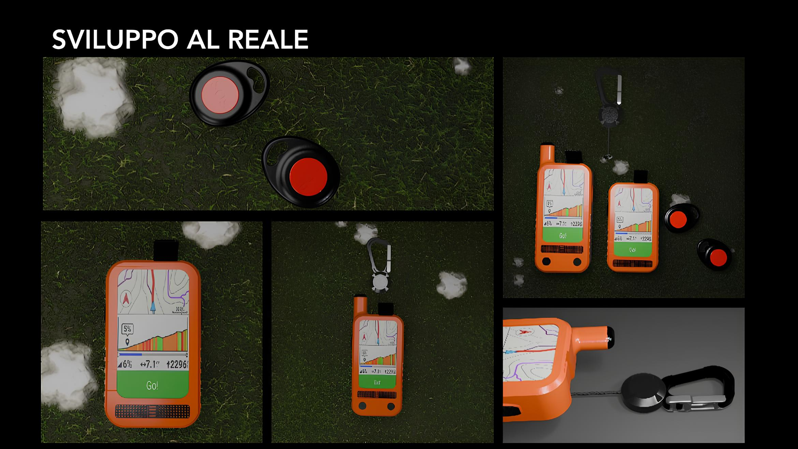
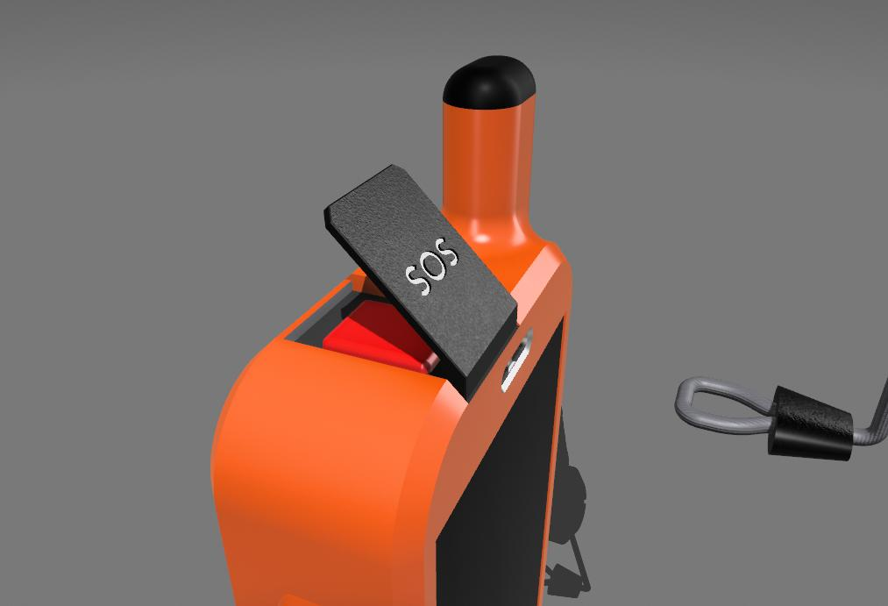
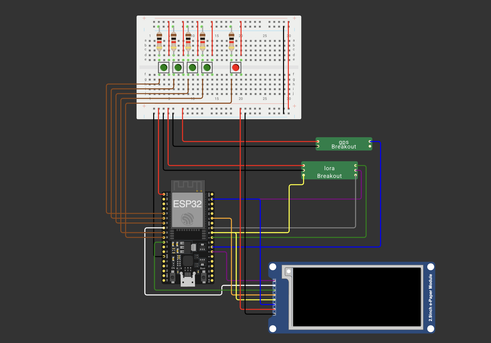

An open-source LoRa mesh that keeps a hiking group together where there is no cell signal, live position tracking, automatic off-route detection, and a one-press SOS. Designed to be printed, built and used out of the box.

The dangerous part is often noticing too late that someone is missing.
Personal locator beacons protect one person, and phone apps usually assume a network. I kept thinking about a more ordinary failure on a school trip, guided trek, or family hike: someone drifts off the path or falls behind, and the group only notices much later. That is the gap I wanted HEARD to cover.
I started HEARD as my Computer Engineering bachelor's thesis at the University of Bologna (2024–2025, supervised by Prof. Alessandro Ricci), then kept working on it as an open-source project. The goal is a cheap, rugged, build-it-yourself device that any hiking group can carry so the guide always knows where everyone is and anyone can call for help with one button.
A self-healing mesh that watches the route
Every hiker carries a GPS + LoRa device. A pre-loaded GPX route defines a corridor (±100 m by default). Each device continuously classifies its position as IN_PATH or OUT_PATH. The guide's device (the Core) polls the group; anyone out of direct radio range is reached through multi-hop relaying by the devices in between.
REQ
The Core broadcasts a position request carrying a hop-list and the positions it already knows.
WAIT
An intermediate node signals it is relaying onward, holding a timeout while distant nodes are contacted.
POS
Devices return aggregated position data back up the chain. Duplicate relays are suppressed via hop-list fingerprints.
Off-the-shelf parts, one custom enclosure
The prototype is deliberately built from common, cheap modules so anyone can source and assemble it. An ESP32 runs the FreeRTOS firmware; a u-blox NEO-6M handles GPS; a LoRa transceiver does the long-range link; and the Core adds a 2.9" e-ink display that sips power and stays readable in direct sun.
Everything lives inside a 3D-printed case designed around the Waveshare e-paper module — the STL files for the Core enclosure are published as a release on GitHub.
Download enclosure STLs
Bill of materials (Core)
| Part | Module | Role |
|---|---|---|
| MCU | ESP32 (dual-core, FreeRTOS) | Runs firmware, mesh protocol & UI |
| GPS | u-blox NEO-6M | Position fix, ~1 m accuracy |
| Radio | LoRa transceiver (e.g. RFM95) | Long-range, license-free link |
| Display | Waveshare 2.9" e-ink | Group status, IN/OUT_PATH (Core only) |
| Input | Momentary buttons + SOS | Navigation & emergency trigger |
| Enclosure | 3D-printed (STL provided) | Rugged, pocketable case |
Three devices, one mesh
Heard Core
The leader's unit. E-ink display, SOS button, route recording and group coordination — it polls everyone and shows the whole group at a glance.
Working prototypeHeard Node
The standard adult device — transmits its position, relays for others, and receives alerts. Standalone firmware is an open milestone.
Firmware in progressHeard Pico
A button-sized, emergency-first variant for children or first-timers. Minimal interface, maximum simplicity.
Concept

How to build
HEARD is meant to be reproduced, not just admired. Even if we are working also on a "out of the box ready" solution the project is already easy to recreate. Here is the path from a cloned repo to a device in your pocket. Everything you need is in the GitHub repository, or watch the build on YouTube.
Print the enclosure
Grab the Core enclosure STLs from the GitHub release and print them. They're designed for the 2.9" e-paper module — no supports needed for most parts.
Wire up the electronics (working on a PCB with all the components included)
Source the parts from the BOM above and follow the reference wiring. The breadboard schematic is published as a Wokwi project, so you can see better all the connections.

Flash the firmware (Browser flasher will come)
The firmware is a PlatformIO project. Clone,
open the code/core environment and
upload — FreeRTOS handles GPS, radio and display
tasks for you.
git clone https://github.com/luciobaiocchi/heard
cd heard/code/core
pio run -t upload # build & flash the Core firmware
pio device monitor # watch it acquire a GPS fixLoad a route & hike (working on a bluetooth loading)
Use the path_loader utility to push
a GPX track over serial. Power on, wait for a
fix, and the Core starts tracking the group
against the route. That's it — you're off-grid
and accounted for.
A digital twin of the whole mesh
You don't need a mountain to develop HEARD. The repo ships a
simulator that compiles the
actual firmware protocol code (the
ConnectionManager) into a Python module via
pybind11, then runs it tick-by-tick along real GPX tracks.
The channel model includes distance-based signal falloff and optional terrain line-of-sight using ITU-R P.526 knife-edge diffraction over real elevation tiles. A browser-based 3D replay viewer (MapLibre GL JS) plays back recorded runs on terrain — planned route, deviation corridor, device positions, LoRa transmission rings, live protocol state, delivery metrics and connectivity matrices. It's the same code you flash, validated in software first.
Open milestones
Standalone Node
Independent firmware for the Heard Node so non-Core devices run on their own. Help wanted.
Professional PCB
A proper PCB layout to replace the breadboard prototype — manufacturing sponsored by PCBWay.
Meshtastic transport
Exploring Meshtastic as an interoperable transport layer for the mesh. Open for discussion.
Tech stack
| Firmware | C++17, PlatformIO, FreeRTOS |
| Simulation | Python, pybind11, NumPy, Matplotlib |
| Visualization | JavaScript (ES modules), MapLibre GL JS, HTML/CSS |
| Build | CMake, GitHub Actions CI |
| Hardware design | Wokwi schematic, FreeCAD/STL enclosure |
| License | Apache License 2.0 |
⚠ HEARD is a research prototype, not a certified safety device. Don't rely on it as your only means of rescue.
Build one. Improve it. Share it back.
HEARD is fully open under Apache-2.0. Whether you want to print a Core, write the Node firmware, design the PCB or just say hi — you're welcome on the trail.